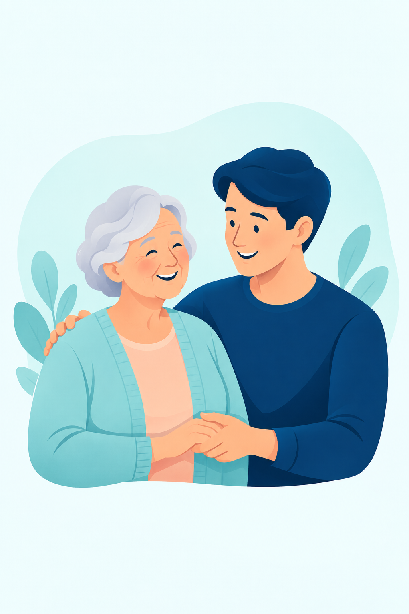

Cuidado hoje,
mais liberdade
amanhã.
Estar perto vai além da distância. Mais segurança para quem você ama e mais autonomia para viver cada momento.
Uma conexão que cuida.
Olá, Maria! ☀
Que bom te ver por aqui!
Viver com autonomia.
Contar com quem importa.
O essencial reunido em um só lugar, com uma experiência simples, acolhedora e pensada para o dia a dia.
Perto, onde estiver.
Uma proposta de localização compartilhada com as pessoas de confiança.
Um cuidado de cada vez.
Lembretes para os compromissos e os pequenos cuidados que fazem diferença.
Ajuda a um toque.
Acesso fácil a familiares e contatos de confiança quando mais precisar.
Sua história, à mão.
Perfil com informações importantes e ficha de saúde de fácil acesso.
Aprender é ganhar liberdade.
Passos simples para usar o celular com mais confiança e independência.
A conexão começa
com um passo simples.
O SeniorLink foi pensado para acompanhar a pessoa idosa e aproximar quem participa do seu cuidado.
Explore essa experiência- 01
Um perfil que acolhe
Informações importantes organizadas para facilitar a rotina.
- 02
Pessoas que fazem parte
Familiares e cuidadores formam uma rede de confiança.
- 03
Mais autonomia, todos os dias
Lembretes, aprendizado e ajuda fácil de encontrar.
Pode tocar. Pode explorar.
Explore uma adaptação web do SeniorLink, no seu ritmo.
Esta é uma experiência de demonstração com dados fictícios. Localização, ligações e SOS são simulados.

TECNOLOGIA + ACESSIBILIDADE + CUIDADOMais do que conectar.
É sobre estar presente.
O SeniorLink nasce da vontade de tornar a tecnologia uma aliada no cuidado com pessoas idosas, respeitando sua autonomia e aproximando sua rede de apoio.
Além do aplicativo, nossa proposta inclui orientação para que pessoas idosas e responsáveis aprendam a usar a tecnologia com segurança e confiança.
Um pouco mais
sobre o SeniorLink.
Para quem o SeniorLink foi pensado?+
Para pessoas idosas que desejam mais autonomia, e para familiares, amigos e cuidadores que fazem parte da sua rede de apoio.
Já posso baixar o aplicativo?+
Esta página apresenta o projeto acadêmico e uma demonstração interativa. Ainda não há um aplicativo publicado para download por aqui.
A localização e o SOS funcionam de verdade?+
Neste site, esses recursos são simulações para apresentar a proposta. O mapa é ilustrativo, nenhum GPS é acessado e nenhum contato ou serviço de emergência é acionado.
O que acontece com os lembretes que eu criar?+
Os lembretes da demonstração ficam apenas neste navegador, quando o armazenamento local está disponível. Não geram notificações reais. Use “Reiniciar” para apagar os exemplos adicionados e começar de novo.
Como a acessibilidade aparece no projeto?+
A demonstração oferece botões amplos, navegação por teclado, opção de aumentar as letras e respeito à preferência por movimento reduzido. O aprendizado faz parte da experiência, com instruções em pequenos passos.